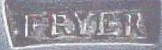

John W. Fryer
John W. Fryer was born during the 1760s. He probably was the son of baker William Fryer who had passed on by 1766. Raised by his widowed mother, the former Hannah Farrell, he was most often referred to as "John W. Fryer."
From his youth, John W. Fryer was known in the community as a silversmith. In May of 1784, the Albany newspaper advertized that "Balch & Fryer [had] opened a shop near the north gate, for the purpose of carrying on the gold and silversmith's business. The north gate at this time is believed to have been a little above Columbia street in Broadway.
In April 1788, he married his childhood Southside neighbor, innkeeper's daughter Nancy Denniston at the Albany Presbyterian church. At that time, both partners were said to have been "of Albany." However, in September 1791, he was confirmed in St. Peter's Episcopal church. Their son was christened at St. Peter's in August 1789.
In 1790, his household showed only the young couple. The first ward census for 1800, showed two "John Fryars" with likely configured households. At this point, we hesitate in assigning census and other qualitative information for what surely was more than one "John Fryer."
This (John W.) silversmith was a member of the Albany Mechanics Society and served as its secretary in 1801.
Beginning with the first edition in 1813, this city mainliner was identified as a silversmith and living at 21 Washington Street which beginning in 1817 was called the rear of 21 South Pearl Street. This distinctively named silversmith last was listed in the directory in 1819.
John W. Fryer is said to have died in 1820. The directory for 1820 identified Nancy the widow of John W. Fryer at that address.
Joseph Balch (1760-1855): Connecticut-born and trained silversmith, served in the war, married Mary Watson in Wethersfield, CT in 1786, silversmith in Williamstown, MA and Johnstown, NY until his death.